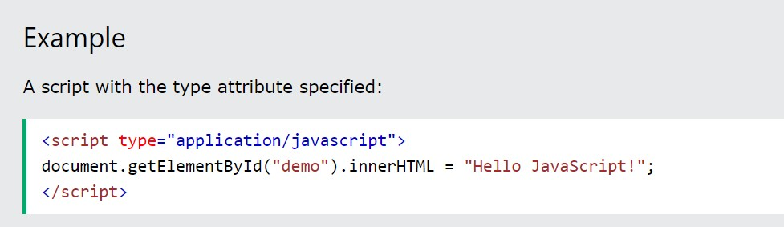
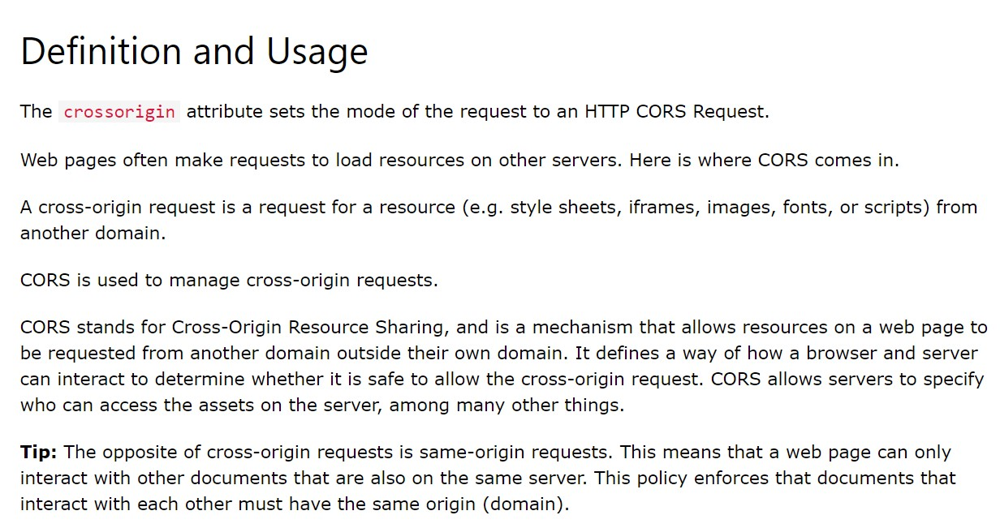
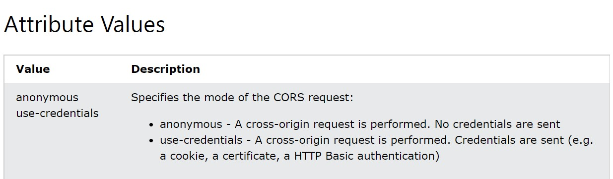
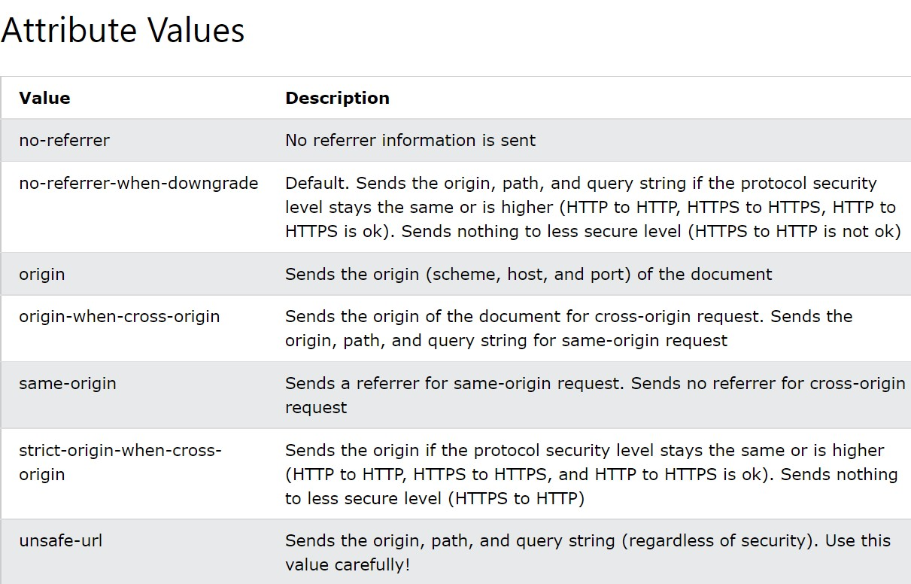
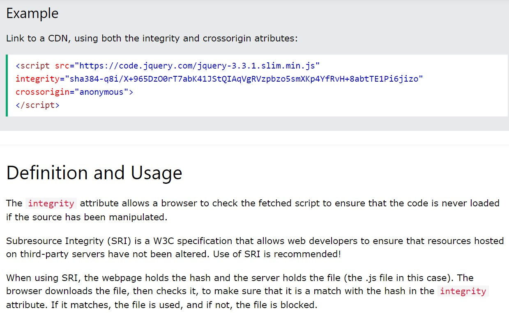

Specifies that the script is downloaded in parallel to parsing the page, and executed as soon as it is available (before parsing completes) (only for external scripts)
Specifies that the script is downloaded in parallel to parsing the page, and executed after the page has finished parsing (only for external scripts)
Specifies the URL of an external script file
Specifies the media type of the script
Sets the mode of the request to an HTTP CORS Request
 Specifies which referrer information to send when fetching a script
Specifies that the script should not be executed in browsers supporting ES2015 modules
Allows a browser to check the fetched script to ensure that the code is never loaded if the source has been manipulated.
